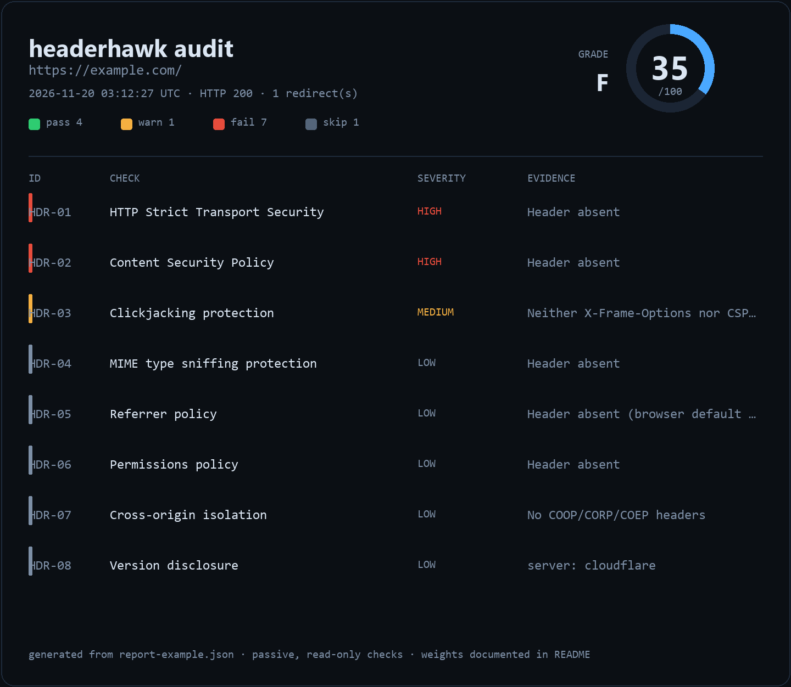

Python · CLI · security
headerhawk
Audits HTTP security headers, cookie attributes, TLS configuration and accidentally published files for a single URL. Produces a weighted 0–100 score plus Markdown, HTML and JSON reports a client can read.
- 13 checks, weights documented so a score can be argued with
- TLS read from the live handshake — protocol, cipher, certificate expiry
- 31 offline unit tests, standard library only, zero install